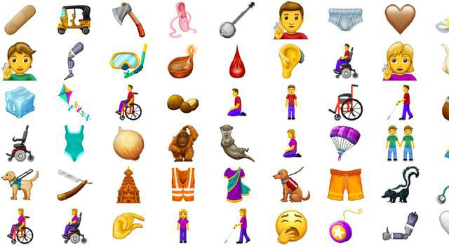

08 min Federaal minister Leefmilieu Marghem over ontslag Schauvliege: "Vind het triest voor haar, want ze heeft veel gedaan"
10:40 "Taalgebruik van conservatieve politici is helder en eenvoudig, liberale politici gebruiken langere zinnen"
08 min Federaal minister Leefmilieu Marghem over ontslag Schauvliege: "Vind het triest voor haar, want ze heeft veel gedaan"
Politiek Federaal minister Leefmilieu Marghem over ontslag Schauvliege: "Vind het triest voor haar, want ze heeft veel gedaan" BANKROOF ANTWERPEN Antwerps parket verspreidt robotfoto van mogelijk brein achter 'perfecte' bankroof De federale politie onderzoekt een robotfoto in het kader van de spectaculaire kluizenkraak begin deze maand. De verdachte is struis gebouwd, ongeveer 45 jaar en heeft een Europese afkomst. Volgens de eerste berichten zou de man een prominente rol opgenomen hebben binnen de bende. Dadelijk meer. 16 min
Brexit Theresa May nog maar eens in Brussel: "Ik zie een wil om samen te werken aan een brexit met akkoord" Update 10:50
Copyright 2018 The Associated Press. All rights reserved Buitenland Frankrijk roept ambassadeur terug uit Italië: "Zwaarste diplomatieke rel sinds de oorlog" 09:20
 Cultuur & Media Menstruatiebloed, rolstoel en flamingo: dit najaar krijg je er 59 nieuwe emoji's bij 09:07
Cultuur & Media "Taalgebruik van conservatieve politici is helder en eenvoudig, liberale politici gebruiken langere zinnen" 09:40
Herbekijk Het Journaal 7 Herbekijk Het Journaal 7 Herbekijk hier Het Journaal 7 van maandag 18 februari. 55 min
Herbekijk Het weer Herbekijk Het weer Herbekijk het weerbericht van maandag 18 februari om 20.05 uur. 39 min
Klimaatactie Leuvense burgemeester Ridouani over kritiek N-VA: "Relaxter omgaan met klimaatdebat en samenwerken" 18:02
Expo Transmigrantenkunst van 100 jaar geleden in Museum Kazerne Dossin Mechelen Emigranten in de Montevideostraat Expo Transmigrantenkunst van 100 jaar geleden in Museum Kazerne Dossin Mechelen Kazerne Dossin toont werk van Eugeen Van Mieghem. Hij was dé schilder van de Antwerpse haven, en van de landverhuizers. 17:03
Sport Verbluffende Pedersen wint de 5.000 meter, Swings speelt geen rol van betekenis 19:28 Artikel van Sporza
Cultuur & Media Menstruatiebloed, rolstoel en flamingo: dit najaar krijg je er 59 nieuwe emoji's bij 17:07
Buitenland Frankrijk roept ambassadeur terug uit Italië: "Zwaarste diplomatieke rel sinds de oorlog" 17:20
Wetenschap Wat als alle auto's elektrisch worden? 2 kerncentrales, 610 windmolens of 15.200 voetbalvelden vol zonnepanelen nodig 05:40
Klimaatactie Leuvense burgemeester Ridouani over kritiek N-VA: "Relaxter omgaan met klimaatdebat en samenwerken" 18:02
Brexit Theresa May nog maar eens in Brussel: "Ik zie een wil om samen te werken aan een brexit met akkoord" Update 16:50
Bankroof Antwerpen Ook derde verdachte opgepakt voor spectaculaire kluizenkraak in Antwerpen Update 18:23
Herbekijk Villa Politica Herbekijk Villa Politica Herbekijk hier "Villa Politica" van maandag 18 februari. 16:32
Herbekijk Terzake Herbekijk Terzake Herbekijk hier "Terzake" van maandag 18 februari. wo 06 feb 20:59
Herbekijk De afspraak Herbekijk De afspraak Herbekijk hier "De afspraak" van maandag 18 februari. wo 06 feb 21:26
Herbekijk "Facebook en ik" aflevering 3 - Nog nooit zo verbonden, nog nooit zo alleen Herbekijk "Facebook en ik" aflevering 3 - Nog nooit zo verbonden, nog nooit zo alleen Herbekijk hier "Facebook en ik" van maandag 4 februari. ma 04 feb 21:20


 Emigranten in de Montevideostraat
Emigranten in de Montevideostraat